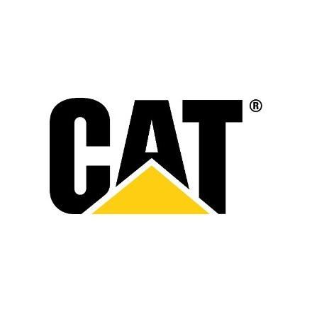
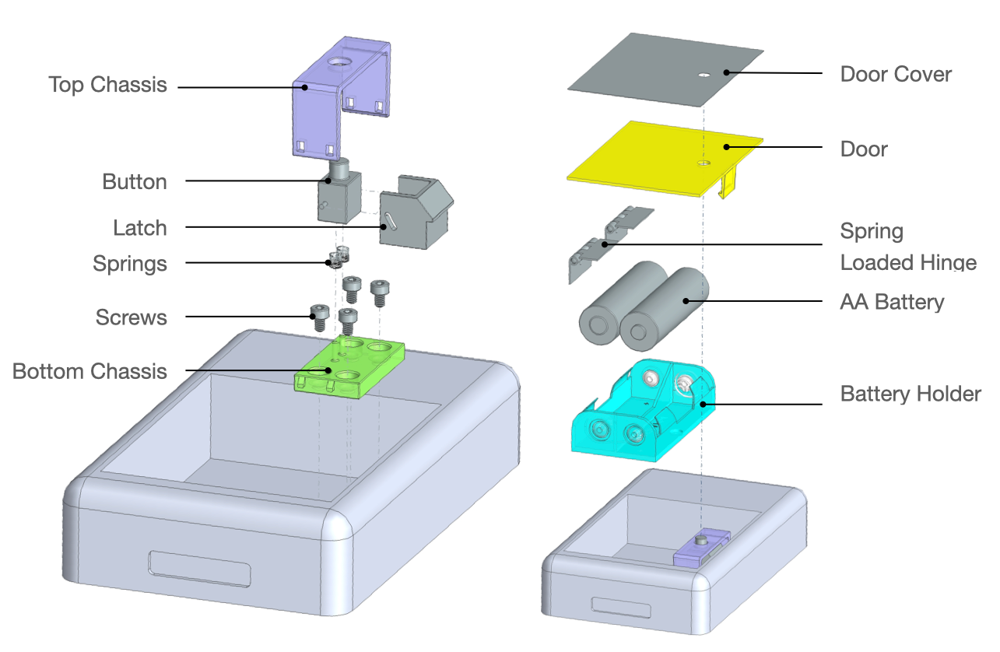
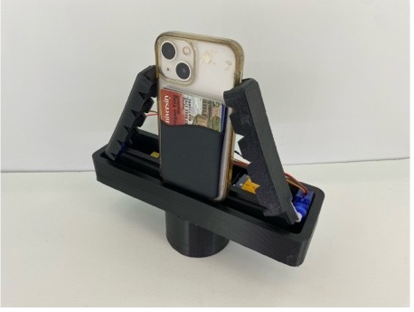
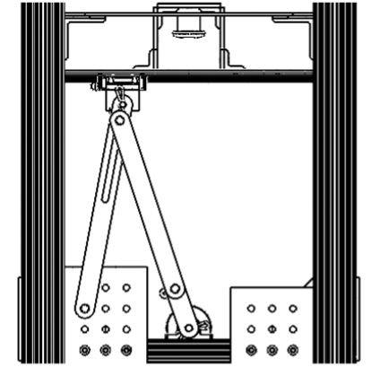
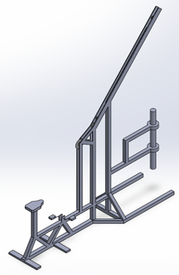
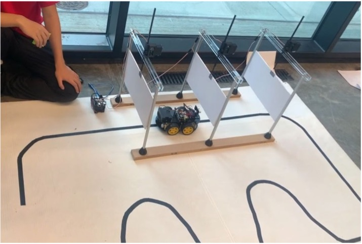
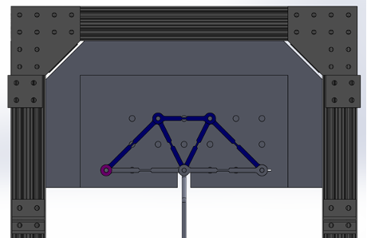
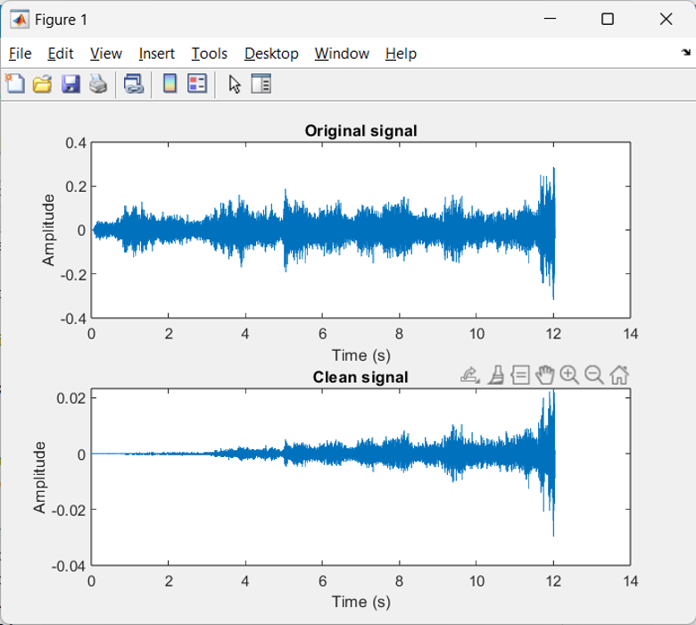
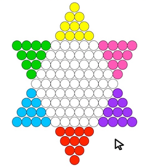

Portfolio
Megan Ying
Carnegie Mellon University — B.S. Mechanical Engineering
(01)about
Hi! My name is Megan Ying and I graduated from Carnegie Mellon University in May 2025 with a Bachelor of Science in Mechanical Engineering. I am driven by a deep passion for using technology to improve the quality of life for others, particularly within the clean tech and healthcare sectors. While my foundation lies in mechanical engineering, my interests extend to software engineering and data science.
Whether it's designing innovative products, leveraging data to drive informed decision-making, or building software solutions, I love applying my skills to make a meaningful impact. Feel free to reach out if you'd like to collaborate or connect!
product design & cad
- Siemens NX
- SolidWorks
- GD&T
- DFM
- PLM
analysis & validation
- FEA
- ANSYS
- Tolerance Analysis
- DOE
- Failure Analysis
manufacturing & prototyping
- Machining
- 3D Printing
- Stamping
- Injection Molding
- Rapid Prototyping
mechatronics & controls
- Arduino
- Control Systems
- Sensor Integration
engineering software
- Python
- MATLAB
(02)experiences
-
Bloomberg
Software Engineer
Oct 2025 — Present
-
Design Research Collective
Research Assistant
Sep 2024 — Jul 2026
-
Apple
Interconnect Product Design Co-op
Sep 2023 — Aug 2024
-
UBS
Quantitative Trading Summer Analyst
Jun 2023 — Aug 2023
-

CaterpillarHydraulics and Controls Engineering Intern
May 2022 — Aug 2022
(03)meche projects
-

Battery
Door Nov 2024 — Dec 2024Designing a one-touch battery door release mechanism with the button seamlessly integrated into the door geometry.
-
Trash
Compactor Sep 2024 — Dec 2024Designing and fabricating an automated household trash compactor to reduce waste volume and plastic bag consumption.
-

Tripod
Attachment Nov 2022 — Dec 2022Designing and manufacturing an assistive tripod attachment that automates phone mounting and simplifies camera positioning for users with limited wrist strength and dexterity.
-

Linkage
System Oct 2022 — Nov 2022Designing and iterating a linkage mechanism to convert rotary motor motion into controlled linear motion and maximize button actuation time.
-

Well
Driller Nov 2021 — Dec 2021Developing a human-powered well drilling system that converts pedal input into vertical drilling motion through mechanical power transmission.
-

Mobile
Robot Oct 2021 — Nov 2021Programming an autonomous differential-drive robot to follow a curved path and avoid moving obstacles using infrared and ultrasonic sensors.
-

Truss
Structure Sep 2021 — Oct 2021Designing and fabricating a lightweight truss structure to withstand a 40-pound load.

(04)other projects
-

Noise
Reduction Feb 2023 — Mar 2023Implementing an adaptive LMS filter in MATLAB to reduce background noise in real-world audio while preserving important signals.
-

Chinese
Checkers Oct 2021 — Nov 2021Building a Chinese Checkers game with AI decision-making, multiplayer support, and an interactive graphical interface.